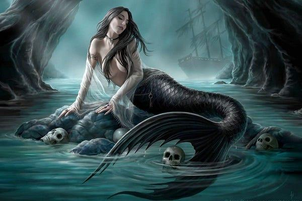
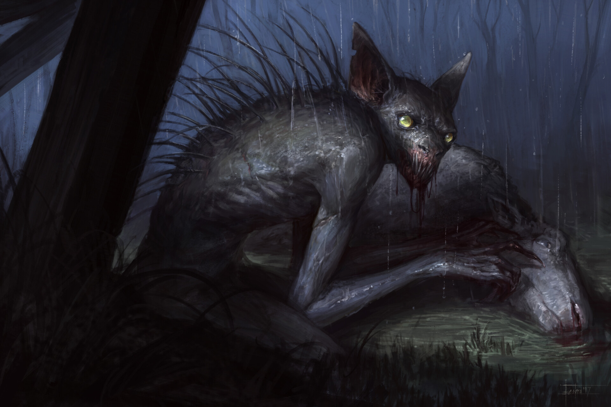
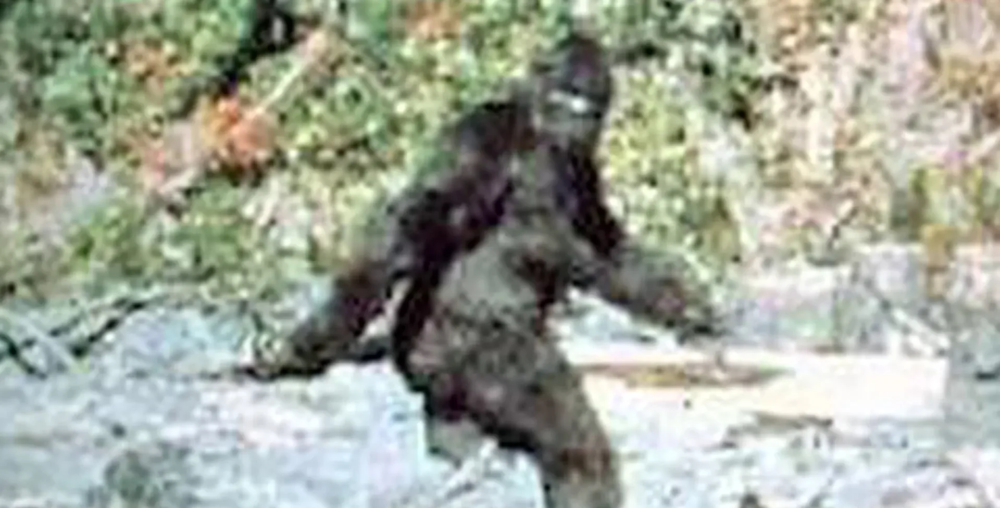
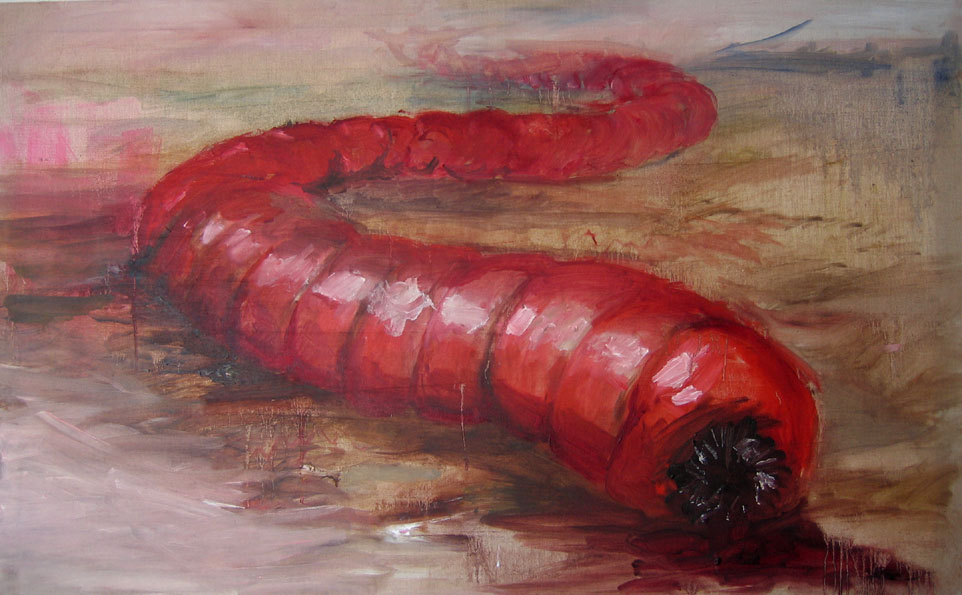
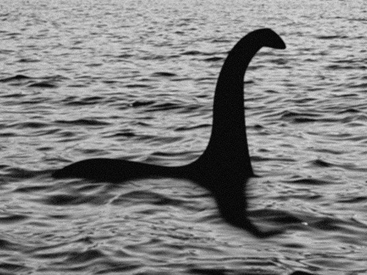
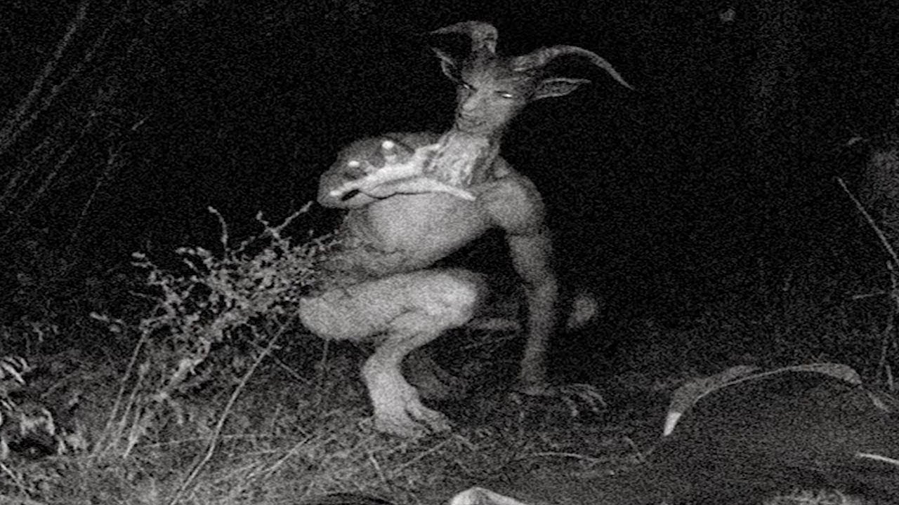
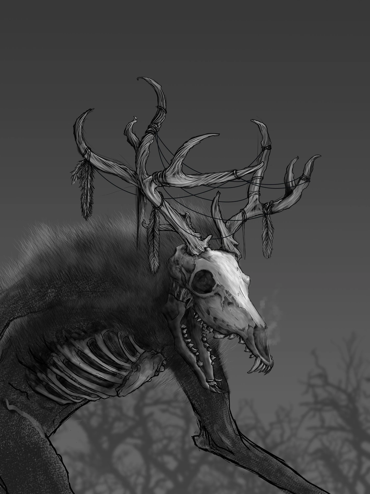
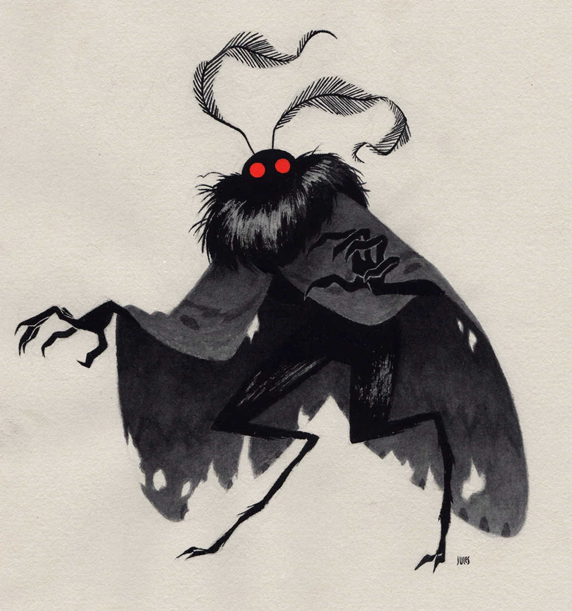

A siren has the appearance of a traditional mermaid, but they are known for luring and killing sailors in the sea with their voice. Sirens originate in various oceans.
A question to start us off is just what is a cryptid? We've all probably heard of the word cryptic, but cryptid is a totally different ballpark and meaning all in one. The general definition is "animals or other beings whose present existence is disputed or unsubstantiated by science". In other words, think of paranormal creatures that may or may not exist in the world around us and their existence is driven by immense folklore. Some we've probably heard of, like the big foot or the wendigo, but there's a lot more uncommon ones that you probably haven't heard of before. And you probably don't know the origins of some of these cryptids either. So now, we're going to go and explore the origins of some of our beloved cryptids throughout history.


A siren has the appearance of a traditional mermaid, but they are known for luring and killing sailors in the sea with their voice. Sirens originate in various oceans.

The chupacabra is a small hyena and bat-like creature that feeds on livestock. It's rumored location in existence is Puerto Rico (originally), South and Central America, and Southern North America.

Arguably one of the most common cryptids, the Sasquatch (big foot) is a tall, furry humanoid creature. It is known to wander the woods and its purported location is the United States as well as California.

The Mongolian Death Worm is a massive worm-like creature that burrows in dunes. It's purported location is in the Gobi Desert in Asia.

The loch ness monster, otherwise known as Nessie, is a sea creature that has the appearance of some sort of Lake Monster, known to be the top of the food chain in the sea. It's primarily rumored to be in Scotland.

The Jersey Devil, otherwise known as the Leeds Devil, has the appearance of a winged, bipedal horse. The Jersey devil, as you can guess, originates in New Jersey.

The wendigo is a cannibalistic appearance that has a rotten humanoid appearance with a deer skull. The tale of the wendigo originates from Indigenous traditions and folklore in North America.

The mothman is a bipedal winged creature that is seen as a bad omen in Mason County Virginia, seen as a warning for people who are passing through the area of a fallen bridge in that county.